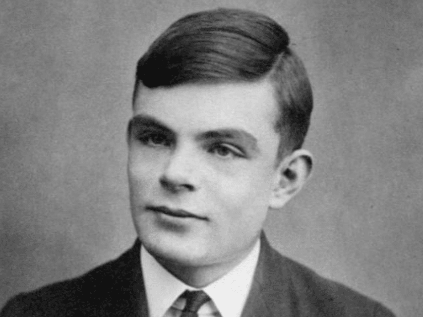
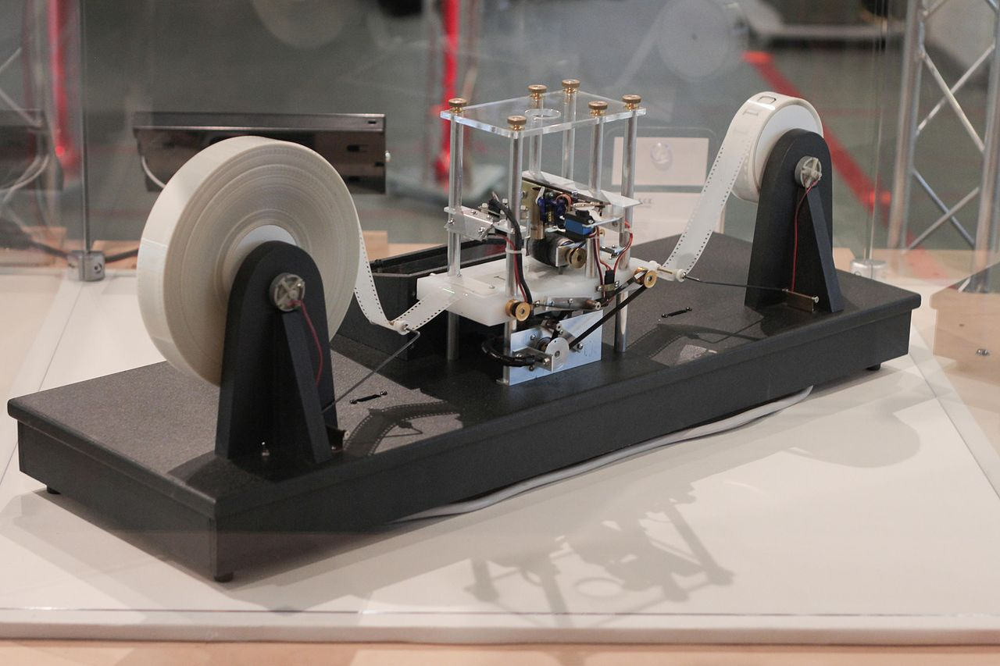

Alan Mathison Turing OBE FRS (/ˈtjʊərɪŋ/; 23 June 1912 – 7 June 1954)
was an English mathematician, computer scientist, logician, cryptanalyst,
philosopher, and theoretical biologist. Turing was highly influential
in the development of theoretical computer science, providing a formalisation
of the concepts of algorithm and computation with the Turing machine, which can
be considered a model of a general-purpose computer. Turing is widely
considered to be the father of theoretical computer science and artificial
intelligence. Despite these accomplishments, he was never fully recognised in
his home country during his lifetime due to the prevalence of homophobia at the time
and because much of his work was covered by the Official Secrets Act.
During the Second World War, Turing worked for the Government Code and Cypher School
(GC&CS) at Bletchley Park, Britain's codebreaking centre that produced Ultra intelligence.
For a time he led Hut 8, the section that was responsible for German naval cryptanalysis.
Here, he devised a number of techniques for speeding the breaking of German ciphers, including
improvements to the pre-war Polish bombe method, an electromechanical machine that could find
settings for the Enigma machine.
Turing played a crucial role in cracking intercepted coded messages that enabled the
Allies to defeat the Nazis in many crucial engagements, including the Battle of the
Atlantic, and in so doing helped win the war. Due to the problems of counterfactual
history, it is hard to estimate the precise effect Ultra intelligence had on the war,
but at the upper end it has been estimated that this work shortened the war in Europe by more
than two years and saved over 14 million lives. After the war Turing worked at the
National Physical Laboratory, where he designed the Automatic Computing Engine. The Automatic
Computing Engine was one of the first designs for a stored-program computer. In 1948, Turing
joined Max Newman's Computing Machine Laboratory, at the Victoria University of Manchester,
where he helped develop the Manchester computers and became interested in mathematical
biology. He wrote a paper on the chemical basis of morphogenesis and predicted oscillating
chemical reactions such as the Belousov–Zhabotinsky reaction, first observed in the 1960s. Turing was
prosecuted in 1952 for homosexual acts; the Labouchere Amendment of 1885 had mandated that "gross
indecency" was a criminal offence in the UK. He accepted chemical castration treatment, with DES, as
an alternative to prison. Turing died in 1954, 16 days before his 42nd birthday, from cyanide
poisoning. An inquest determined his death as a suicide, but it has been noted that the known
evidence is also consistent with accidental poisoning.
In 2009, following an Internet campaign, British Prime Minister Gordon Brown made an official public apology on behalf of the British government for "the appalling way he was treated". Queen Elizabeth II granted Turing a posthumous pardon in 2013. The "Alan Turing law" is now an informal term for a 2017 law in the United Kingdom that retroactively pardoned men cautioned or convicted under historical legislation that outlawed homosexual acts.
A Turing machine is a mathematical model
of computation that defines an abstract machine, which manipulates symbols on a strip of tape according to a
table of rules. Despite the model's simplicity, given any computer algorithm, a Turing machine capable of
simulating that algorithm's logic can be constructed.
The machine operates on an infinite memory tape divided into discrete "cells". The machine positions its
"head" over a cell and "reads" or "scans" the symbol there. Then, as per the symbol and the machine's own
present state in a "finite table" of user-specified instructions, the machine (i) writes a symbol (e.g.,
a digit or a letter from a finite alphabet) in the cell (some models allow symbol erasure or no writing),
then (ii) either moves the tape one cell left or right (some models allow no motion, some models move the head),
then (iii) (as determined by the observed symbol and the machine's own state in the table) either proceeds to a
subsequent instruction or halts the computation.
The Turing machine was invented in 1936 by Alan Turing, who called it an "a-machine" (automatic machine). With
this model, Turing was able to answer two questions in the negative: (1) does a machine exist that can determine whether
any arbitrary machine on its tape is "circular" (e.g., freezes, or fails to continue its computational task); similarly,
(2) does a machine exist that can determine whether any arbitrary machine on its tape ever prints a given symbol. Thus by providing
a mathematical description of a very simple device capable of arbitrary computations, he was able to prove properties of computation
in general—and in particular, the uncomputability of the Entscheidungsproblem ('decision problem').
Turing machines proved the existence of fundamental limitations on the power of mechanical computation. While they can express
arbitrary computations, their minimalist design makes them unsuitable for computation in practice: real-world computers are based
on different designs that, unlike Turing machines, use random-access memory.
Turing completeness is the ability for a system of instructions to simulate a Turing machine. A programming language that is Turing complete is theoretically capable of expressing all tasks accomplishable by computers; nearly all programming languages are Turing complete if the limitations of finite memory are ignored.
 The Turing test, originally called the imitation game by
Alan Turing in 1950, is a test of a machine's ability to exhibit intelligent behaviour equivalent to, or indistinguishable from,
that of a human. Turing proposed that a human evaluator would judge natural language conversations between a human and a machine
designed to generate human-like responses. The evaluator would be aware that one of the two partners in conversation is a machine,
and all participants would be separated from one another. The conversation would be limited to a text-only channel such as a computer
keyboard and screen so the result would not depend on the machine's ability to render words as speech. If the evaluator cannot reliably
tell the machine from the human, the machine is said to have passed the test. The test results do not depend on the machine's ability to
give correct answers to questions, only how closely its answers resemble those a human would give.
The Turing test, originally called the imitation game by
Alan Turing in 1950, is a test of a machine's ability to exhibit intelligent behaviour equivalent to, or indistinguishable from,
that of a human. Turing proposed that a human evaluator would judge natural language conversations between a human and a machine
designed to generate human-like responses. The evaluator would be aware that one of the two partners in conversation is a machine,
and all participants would be separated from one another. The conversation would be limited to a text-only channel such as a computer
keyboard and screen so the result would not depend on the machine's ability to render words as speech. If the evaluator cannot reliably
tell the machine from the human, the machine is said to have passed the test. The test results do not depend on the machine's ability to
give correct answers to questions, only how closely its answers resemble those a human would give.
The test was introduced by Turing in his 1950 paper, "Computing Machinery and Intelligence", while working at the University of
Manchester (Turing, 1950; p. 460). It opens with the words: "I propose to consider the question, 'Can machines think?'" Because
"thinking" is difficult to define, Turing chooses to "replace the question by another, which is closely related to it and is expressed
in relatively unambiguous words." Turing describes the new form of the problem in terms of a three-person game called the "imitation game",
in which an interrogator asks questions of a man and a woman in another room in order to determine the correct sex of the two players. Turing's
new question is: "Are there imaginable digital computers which would do well in the imitation game?" This question, Turing believed, is one
that can actually be answered. In the remainder of the paper, he argued against all the major objections to the proposition that "machines can
think".
Since Turing first introduced his test, it has proven to be both highly influential and widely criticised, and it has become an important concept in the philosophy of artificial intelligence.[7][8][9]. Some of these criticisms, such as John Searle's Chinese room, are controversial in their own right.